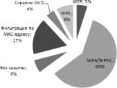

УДК 004.771
Вязмин В.И., Чернышова А. В. Донецкий национальный технический университет testerreality@gmail.com, chernyshova.alla@rambler.ru
Стандарт Wi-Fi
В наше время наиболее развивающейся технологией, которая присутствует на большинстве устройств, является беспроводная локальная сеть (Wi-Fi), однако она как помогает, так и имеет множество уязвимостей. Wi-Fi [1] (происходит от английского сокращения Wireless Fidelity) – семейство протоколов беспроводной передачи данных IEEE 802.11x (802.11а, 802.11b и т.д.) [2]. Беспроводной сеть называется поскольку принимает и передает информацию с помощью радиоволн (происходит это за счет преобразования необходимой информации в радиоволны, а передача данных происходит с помощью встроенной антенны).
Несколько сетей могут существовать одновременно из-за того, что радиоволны передаются на разных частотах, которые еще называются каналами. Чтобы передать информацию устройству Wi-Fi, необходимо наложить данные на радиоволну. Процесс наложения данных на радиоволну называется модуляцией. 802.11x - является стандартом беспроводной сети, данный стандарт занимает два нижних уровня модели OSI (Open System Interconnection) [3] – физический и канальный. Именно эти уровни в большей мере отражают специфику локальных сетей. Следует понимать, как именно различается беспроводная сеть от кабельной на физическом и канальном уровне.
Беспроводная сеть отличается от кабельной на физическом уровне, поскольку физический уровень IEEE 802.11x – радиоканал. Данный уровень диктует параметры физической среды передачи данных и обеспечивает передачу сигнала двумя методами: методом прямой последовательности и методом частотных скачков. Канальный уровень обеспечивает управление доступом и разделятся на два подуровня: MAC - управление доступом к среде передачи данных и LCC - управление логическим каналом.
На канальном уровне отличие беспроводной сети в том, что на подуровне MAC используется полудуплексный режим передачи данных, а в кабельных сетях с архитектурой Ethernet - дуплексный режим. При увеличении частоты количество данных, которые можно передать по беспроводной сети, увеличивается, однако снижается радиус действия.
Wi-Fi сети не отличаются своей дальностью передачи данных. Наиболее распространенные стандарты Wi-Fi это стандарт 802.11а [4] , 802.11g [5] и 802.11ас [6]. Стандарт 802.11а славится высокой производительностью и скоростью. Особенность данного стандарта заключается в том, что из-за использования 5 ГГц частоты и модуляции OFDM у него увеличена скорость передачи данных и он поддерживает большую доступную частоту пропускания, которая, в свою очередь, позволяет иметь большее число одновременных беспроводных соединений. Стандарт 802.11g представляет собой высокоскоростной диапазон 2.4 ГГц. Особенность данного стандарта проявляется в высокой скорости передачи данных. Данный стандарт соединил в себе все лучшее от стандартов 802.11а и 802.11b. Стандарт 802.11ac – относительно новый, работает на частоте 5-6 ГГц и обеспечивает значительно большие скорости, как на точку доступа, так и на клиента. Беспроводные сети работают на частотах 2.4 ГГц либо 5 ГГц. Wi-Fi сети достаточно сильно подвержены риску несанкционированного доступа, следовательно на их защиту следует обратить особое внимание.
Механизмы защиты данных
Любые механизмы проектируют люди, а люди имеют свойство ошибаться, в связи с чем возникают ошибки, которые позволяют обойти любую защиту. Существует следующие способы защиты беспроводных сетей: протокол шифрования WEP [7], протокол шифрования WPA [8], протокол WPA2, стандарт безопасности 802.1X, стандарт WPS, фильтрация по МАС адресу, скрытие SSID [9], запрет доступа к настройкам точки доступа или роутера через беспроводную сеть. Самый нераспространенный способ защиты, который на удивление все еще иногда используется, это отсутствие всякой защиты. Это означает, что точка доступа, как и клиент, вовсе не маскируют передачу данных. Так как почти любой беспроводной адаптер имеет возможность "прослушки" (вместо приема пакетов предназначенных только себе, будут приниматься все возможные пакеты), данный способ защиты вообще неактуален. К сожалению, такой принцип работы имеют проводные сети - при подключении к хабу или свичу (свич предварительно переведен в режим работы хаба) сетевой адаптер может получать пакеты от всех устройств в данном участке сети. Ввиду того, что к беспроводной сети можно подключиться из любого места (в радиусе действия сети), то завладеть вашими данными не составит труда. Но стоит отметить, если необходимо работать в такой сети, то необходимо использовать VPN и SSL. Проведенный опрос среди владельцев своих беспроводных сетей показал, что большинство стремится использовать надежную и проверенную защиту, однако не мал процент тех людей, которые пренебрегают проверенными способами защиты, и даже не подозревают, какая опасность грозит их личным данным. На
удивление были люди, которые и вовсе не использовали в своих сетях никакую защиту, аргументируя это тем, что им нечего скрывать. Опрошенные компании утверждают, что они используют фильтрацию по MAC-адресу. На основе данного опроса был составлен рейтинг использования протоколов защиты Wi-Fi, который представлен на рис. 1.

Рисунок 1 - Рейтинг использования протоколов защиты Wi-Fi
Следующим способом защиты является протокол шифрования WEP. WEP основан на алгоритме шифрования RC4 с 40 или 104 – битовым ключом, который складывается со сгенерированным вектором инициализации (24 бит). Благодаря полученному ключу по алгоритму RC4 шифруются данные пользователя и контрольная сумма. Вектор инициализации передается в открытом виде. Минусом данного алгоритма безусловно является 40-битный ключ. Следующим минусом является неизменяемость ключа, что существенно упрощает взлом. К сожалению, этот метод имеет серьезные недостатки, которые позволяют раскрыть передаваемую информацию, и предполагает распределение ключей шифрования вручную. Данным методом стоит пренебрегать наравне с открытыми сетями, поскольку он обеспечивает безопасность только на малый промежуток времени, спустя который передачу данных можно раскрыть. Главной уязвимостью WEP является ошибка в проектировании. Шифрование потока происходит благодаря временному ключу. WEP передаёт несколько байт данного ключа вместе с каждым пакетом данных. Это свидетельствует о том, что не смотря на сложность ключа, возможно раскрыть любую передачу, перехватив определенное количество пакетов. Шифрование WPA – замена уязвимому WEP. Расшифровывается, как Wi-Fi Protected Access.WPA призвана заменить WEP, и базируется на временном протоколе целостности ключей (TKIP), задача которого — не допустить повторного использования кодирующих ключей. WPA обеспечивает обратную совместимость с WEP, что позволяет использовать ее на той же аппаратной базе, а также гарантирует улучшенную защиту, взяв от WEP только все самое лучшее. С длиной пароля здесь лучше, чем в WEP, поскольку она случайная, и колеблется от 8 до 63 байт, благодаря чему его подбор становится в разы сложнее. Данный стереотип поддерживает некоторые алгоритмы шифрования передаваемых данных после рукопожатия: TKIP и CCMP. TKIP — среднее звено между WEP и WPA, был разработан для временной службы, пока в разработке находился CCMP. Следовательно, TKIP имеет некоторые уязвимости и является небезопасным. В данный момент времени используется исключительно в редком случае, иными словами, использование WPA с TKIP равняется использованию WEP. Особенностью TKIP является возможность проведения так называемой Michael-атаки. Разработчики предусмотрели недостатки своей технологии и в WEP в TKIP ввели некое ограничение, которое заключается в том, что если была обнаружена атака на подбор ключа, то точка доступа
«засыпает» на 60 секунд. Суть Michael-атаки заключается в передаче «испорченных» пакетов для отключения сети. Отличие от DDoS-атаки заключается в том, что в данном случает хватит всего пары пакетов чтобы вывести точку доступа из строя на одну минуту. Отличие WPA от WEP заключается в том, что WPA шифрует данные каждого клиента по отдельности. Если рукопожатие было успешным, то после него будет сгенерирован временный ключ — PTK, который используется для кодирования передачи исключительно данного пользователя. Следовательно, если злоумышленник проник в сеть, то прочитать пакеты других пользователей он сможет только после перехвата рукопожатия каждого из них. Несмотря на различные алгоритмы шифрования, WPA(2) также имеет два разных режима начальной аутентификации (проверки пароля для доступа клиента к сети) — PSK и Enterprise. PSK (еще называют WPA Personal) — вход по единому паролю, который вводит пользователь при подключении. На данный момент времени WPA/WPA2 уже является достаточно небезопасными, в связи с чем производители начинают выпускать новые обновления чтобы перекрыть старые уязвимости. Стандарт 802.1X позволяет производить аутентификацию и авторизацию устройств, пытающихся подключиться к локальной сети, и отказывает им в доступе, если аутентификация или авторизация не проходят. Администраторы беспроводных локальных сетей одними из первых внедрили стандарт 802.1X. В отличие от обычных проводных кабельных сетей беспроводные локальные сети нельзя
«защитить» стенами и закрытыми дверями, поэтому они более уязвимы к нападениям. Сейчас стандарт 802.1X всё чаще применяется в кабельных сетях в качестве дополнительной меры защиты, и малоэффективен для беспроводных сетей.
WPS – стандарт полуавтоматического создания беспроводной сети. WPS позволяет клиенту подключиться к точке доступа по 8-символьному коду, состоящему из цифр (PIN). Благодаря ошибке в стандарте нужно подобрать только 4 символа. Следовательно, достаточно всего 10000 попыток подбора и, не смотря на сложность пароля, доступ будет получен. Беря во внимание то, что это взаимодействие происходит до всяких проверок безопасности, в секунду можно отправлять по 10-50 запросов на вход через WPS, и примерно через 5 часов доступ будет получен. Устройств, использующих данный тип защиты, сейчас примерно половина, следовательно, они очень уязвимы.
Атаки на беспроводные сети
Для проверки надежности беспроводной сети было разработано немало всевозможных методов.[10] Самой универсальной и распространенной атакой является взлом WPA/WPA2 паролей. Рейтинг способов атаки на беспроводные сети представлен на рис. 2.
Рисунок 2 - Рейтинг способов атаки на Wi-Fi
Главным ее достоинством является то, что ее возможно применить к большинству сетей на данный момент времени. Одним из главных минусов является то, что для осуществлений данной атаки необходимо, чтобы к точке доступа был подключен клиент. Для успешного осуществления данной атаки необходимо знать название сети (ESSID) , далее необходимо получить достаточно качественную запись процедуры обмена ключами между клиентом и точкой доступа (так называемый “хендшейк” , от англ. Handshake - рукопожатие), достаточно часто на данном этапе производится деаутентификация клиента, с целью заставить его заново подключится к сети, т.е. произвести рукопожатие. После захвата необходимых пакетов, необходимо произвести атаку «брутфорсингом» (методом перебора) паролей. Поскольку в перехваченном рукопожатии мы имеем хеш пароля, нам необходимо подбирать пароли до тех пор, пока у нас не будет точно такой же ответ, как и в перехваченном рукопожатии. Следовательно, если пароль будет достаточно надежным (под надежностью подразумевается длина пароля), то взломать такую сеть за короткий промежуток времени не удастся. Следующим типом атаки является атака на сети с использованием защиты WEP. Как упоминалось ранее, для его взлома необходимо просто перехватить необходимое количество пакетов, поскольку каждый пакет имеет несколько байт ключа. На данный момент времени точек, которые использовали бы WEP, почти нет,
следовательно, данный способ теряет свою актуальность.
Далее рассмотрим обход стандарта полуавтоматического подключения WPS. Данный протокол описывался ранее, но стоит напомнить, что его обход не составит труда, поскольку он имеет всего 8 символов, и последний символ является контрольной суммой, следовательно стоит подобрать всего 7 символов. Первый блок состоит из 4 цифр, второй – из 3, это означает, что следует перебрать всего лишь 10998 комбинаций. На данный момент точек доступа со включенным WPS практически нет.
Теперь следует рассмотреть понижение протокола WPA до WEP. Данный способ касается социальной инженерии. Суть заключается в том, что каждый раз, когда клиент подключается к своей точке доступа, атакующий каждый раз отключает клиента от нее (производит деаутентификацию) при помощи отправки шифрованных пакетов данного протокола. Главной задачей является заставить клиента поверить в неработоспособность данного протокола (WPA) и заставить его перейти на другой протокол – WEP, либо отключить шифрование.
Следующим способом атаки является подмена настоящей точки доступа фальшивой. Идея заключается в том, что на точку доступа бесконечно отправляются пакеты деаутентификации, в следствии чего клиент не может подключиться к точке. В это время человек, которому необходимо завладеть точкой,
«поднимает» свою точку доступа, с такими же параметрами, как у необходимой сети и ожидает подключения клиента к ней. Следующим этапом является выманивание у клиента пароля сети, производится это совершенно разными способами, например: в браузере у пользователя будет окно очень схоже с окном подключения к точке доступа, где его попросят ввести пароль. Данный способ использует некомпетентность клиента.
Теперь рассмотрим атаку с помощью беспроводных сетей. Данный способ заключается в создании мошеннической точки доступа. Идея заключается в том, что злоумышленник создает свою точку, разумеется без пароля, и ждет пока к ней подключается клиенты. После подключения клиента к точке, злоумышленник
может реализовать любую атаку для получения пароля клиента, куки клиента или перенаправить на различные сайты.
Выводы
Развитие беспроводных сетей несет в себе также и угрозы при работе в этих сетях. Таким образом, следует не пренебрегать безопасностью своей беспроводной сети и быть всегда внимательными, использовать только длинные пароли, через некоторый промежуток времени пароли следует менять. Рекомендуется для защиты своей сети использовать протокол WPA2-PSK-CCMP. Данный материал предоставлен исключительно в ознакомительных целях.
Список источников
Wi-Fi // Wikipedia. [Электронный ресурс]. – Режим доступа: https://ru.wikipedia.org/wiki/Wi-Fi
Группа стандартов WiFi IEEE 802.11 // wi-life. [Электронный ресурс]. – Режим доступа: http://wi-life.ru/texnologii/wi-fi/wi-fi-standarty
Семиуровневая модель OSI // Sernam. [Электронный ресурс]. – Режим доступа: http://sernam.ru/book_icn.php?id=6
IEEE 802.11a // Wikipedia. [Электронный ресурс]. – Режим доступа: https://ru.wikipedia.org/wiki/IEEE_802.11a
IEEE 802.11g // Wikipedia. [Электронный ресурс]. – Режим доступа: https://ru.wikipedia.org/wiki/IEEE_802.11g
IEEE 802.11ac // Wikipedia. [Электронный ресурс]. – Режим доступа: https://ru.wikipedia.org/wiki/IEEE_802.11ac
Виды атак на Wi-Fi // Hackware. [Электронный ресурс]. – Режим доступа: https://hackware.ru/?p=158